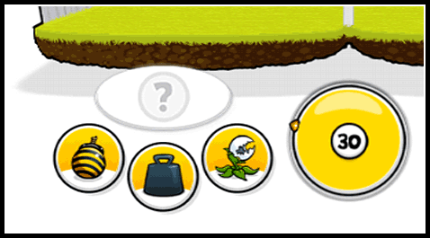

12 |
Angriff |
 |
|
 Jedes Team hat eine Angriffszeit, um eine der drei Basis-Attacken auszuführen (Bombe, Gewicht, Pflanze). Läuft sie ab, ist der Gegner dran!
 Einen Angriff führst du aus, indem du zunächst eine Attacke mit  auswählst. Es erscheint eine Vorlage aus Punkten, die du mit Hilfe des Cursors nachzeichnen musst. Drückst Du währenddessen auf den Abbruchknopf, brichst du die Attacke ab. auswählst. Es erscheint eine Vorlage aus Punkten, die du mit Hilfe des Cursors nachzeichnen musst. Drückst Du währenddessen auf den Abbruchknopf, brichst du die Attacke ab.
 Hast du die Vorlage vervollständigt, ist die Attacke bereit. Warte nun einen günstigen Zeitpunkt ab und bestätige den Angriff durch Klick auf den Attackenknopf mit . Behalte dabei immer den Timer im Auge. Läuft deine Zeit vorher ab, wird dein Angriff abgebrochen.
Es gibt zwei Arten von Attacken:
Tipp: Im Hühnerstall erfährst du mehr über die verschiedenen Attacken und ihre Verteidigung. |

 |
 |
 |